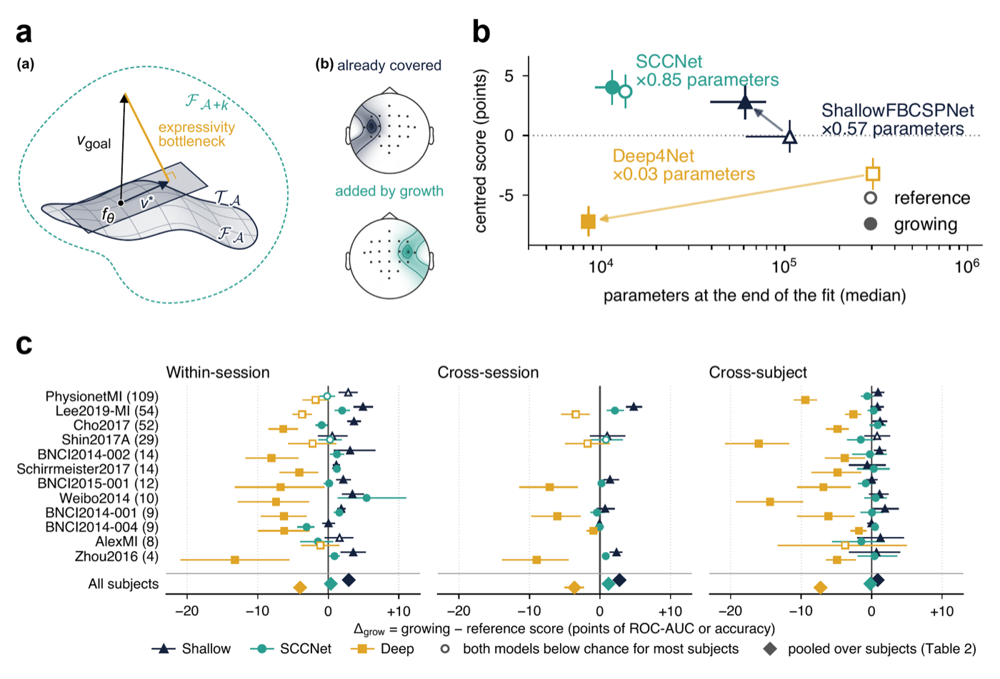

Hello! 👋
 I'm Adam MOUNIR
I'm Adam MOUNIR
AI Research & Engineering· AI @ CentraleSupélec
Deep learning for EEG decoding at Inria — TAU.
Publications
Neuron-Level Architecture Growth: A Controlled Evaluation for EEG Time-Series Decoding
Networks widen during training instead of using a fixed width, reaching +2.9 pp over ShallowFBCSPNet at 0.57× parameters; the refusal rate of growth predicts when it helps.
Figure & abstract

Convolutional EEG decoders are trained at a fixed width, usually set by their authors on other data. Growing methods add neurons during training where the loss could decrease the most, but whether they improve compared to a reference width is untested on EEG. Here, we grow three convolutional backbones on 12 motor-imagery datasets under three protocols and compare each with its reference model per subject. The growing ShallowFBCSPNet scores 2.9 points above its reference model with only half the parameters (0.57x), SCCNet changes by at most 1.2 points. Deep4Net growing models show decreased accuracy, but they require adaptation that prevent to compare faithfully the results. These differences follow the selection step, which keeps a candidate neuron relying on a dynamic threshold from singular values decomposition. Overall, these results suggest that growth helps when its criterion can rank the candidate neurons, and that the rate of skipped neuron addition tells where a decoder can be grown small from scratch.
EEG/EMG Foundation Challenge 2026: Neural Interfaces for Generalizable Decoding
Large-scale competition benchmarking models for cross-subject EEG and EMG decoding, co-organized with Meta and leading academic labs; built the benchmark infrastructure.
Open Source
Braindecode
Contributor · PyTorch library for deep learning on EEG, MEG & iEEG
I port published neural-decoding models, mostly intracranial (sEEG/iEEG) foundation models, into Braindecode as native, tested and documented modules, so they can be benchmarked side by side on open datasets.
Models
Region-level sEEG speech decoder with VQ-VAE and MAE pre-training. Pretrained weights re-hosted on Hugging Face; replicated the paper's 61-word results.
Population-level aggregator over per-electrode embeddings and their anatomical positions, built to stack on BrainBERT.
Self-supervised Transformer over STFT spectrograms of intracranial recordings, compatible with the released weights.
Temporal Transformer within each channel followed by a spatial Transformer across channels, on patch and band-power embeddings.
Spatio-temporal EEG Transformer from the winning team of the EEG 2025 decoding competition.
Plus CI and test maintenance: #1047, #1056 · all my PRs ↗
Experience
AI Research Intern
Inria — TAU (Université Paris-Saclay) — Paris
Researching deep-learning architectures for end-to-end electroencephalography (EEG) decoding in the open-source library Braindecode, and Growing Neural Networks during training in EEGrow. Designing transformer, graph-neural-network, convolutional and Riemannian models for neural decoding on open EEG datasets. Porting in-training architecture growth (gromo) to EEG decoding — conv-junction width auto-sized during training rather than tuned. Co-organizing the NeurIPS 2026 EEG/EMG decoding competition (Meta, top academic labs) and building its benchmark infrastructure. Supervised by Sylvain Chevallier & Guillaume Charpiat (Inria TAU).
AI Engineer — Apprentice
Société Générale — Paris
Detecting semantic discrepancies between unstructured document disclosures and structured multi-provider data. Engineering a Zero-shot NER pipeline using Claude 3.5 Sonnet (RAG) and Directed Graphs for topological impact analysis. Automating cross-source data alignment and causal influence tracing within hierarchical scoring models.
AI Research Intern
Thales — Paris
Researching global-scale Root Cause Analysis by distilling multi-step reasoning from LLMs into specialized architectures. Designed a supervised alignment pipeline mapping expert causal trajectories from logs into internalized reasoning schemas. Distilled causal traces via GPT-4o to fine-tune a SFT pipeline using Llama 3.1 (QLoRA). Achieved 0.64 F1-score in RCA prediction.